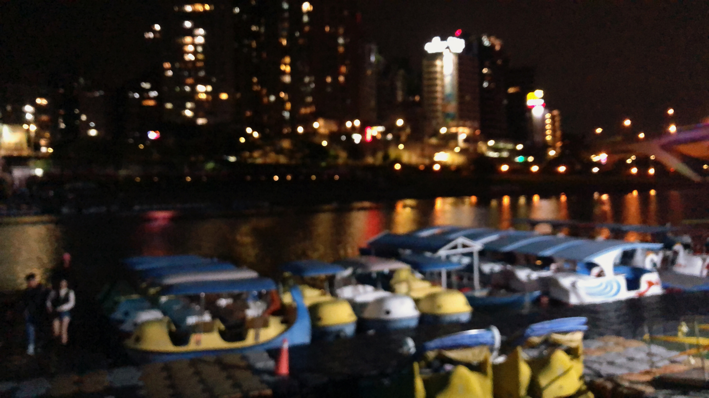
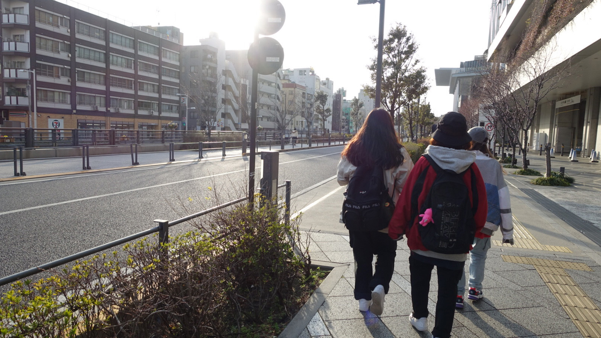
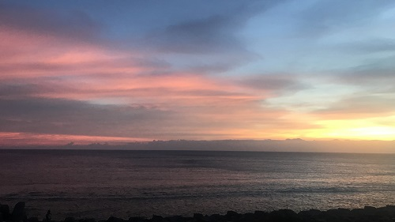

我的愛好 "Favorite things"
| 歌手/歌名 | 發行年 | 語言 | 音樂風格 |
|---|---|---|---|
| 田馥甄My Love | 2011 | 中文 | 抒情 |
| BlackPink/Forever Young | 2018 | 韓文 | K-pop |
| 鄧紫棋/多遠都要在一起 | 2015 | 中文 | 抒情 |
| 徐佳瑩/失落沙洲 | 2009 | 中文 | 抒情 |
| 王心凌/愛你 | 2004 | 中文 | 流行 |
| 電影名稱 | 發行年 | 國家 | 電影類型 |
|---|---|---|---|
| 飢餓遊戲 | 2012 | 美國 | 冒險類 |
| 歌喉讚 | 2012 | 美國 | 音樂喜劇類 |
| 暮光之城 | 2008 | 美國 | 奇幻類 |
| 夏日樂悠悠 | 2011 | 中國大陸 | 愛情類 |
| 大娛樂家 | 2017 | 美國 | 歌舞戲劇類 |
| 頻道名稱 | 創建日期 | 訂閱人數 | 影片內容 |
|---|---|---|---|
| 這群人 | 2011 | 322萬 | 原創、搞笑、幽默以及KUSO |
| 愛莉莎莎 | 2017 | 100萬 | 因分享韓國留學生活和感情分析的影片爆紅，今日內容多元 |
| 木曜4超玩 | 2017 | 162萬 | 一日職業體驗 |
| 見習網美小吳 | 2017 | 70萬 | 類型多元 |
| 白癡公主 | 2010 | 142萬 | 以學校作品搞笑二創卡通配音影片爆紅，今日內容多元 |
Gallery
我的作品

晚上的碧潭
我常與朋友在晚上約騎腳踏車，再到碧潭走走

日本的街道與同行友人
整潔的街道加上溫暖的太陽，令人心曠神怡
夜間的日本雷門寺
在晚上的雷門寺，加上燈光，別有一番風味

綠島的夕陽
看著雲朵從橘色變成偏粉色，真的很美

日本沖繩
海岸線與雲朵交織成了一幅畫
日本鎌倉海邊
鎌倉是知名動漫灌籃高手的場景
南投山上
之前跟阿嬷參加國內旅行團，行程之一是爬山
十分瀑布
一直想去十分瀑布一探究竟，景色真的很壯觀

歌本與麥克風
唱歌是我的休閒娛樂，小時候都用歌本點歌